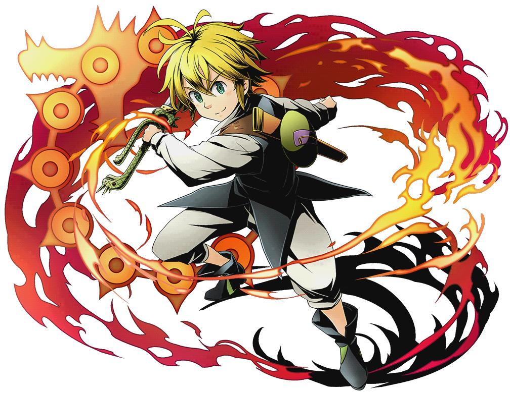
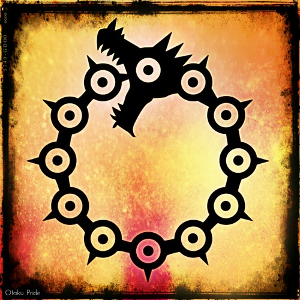
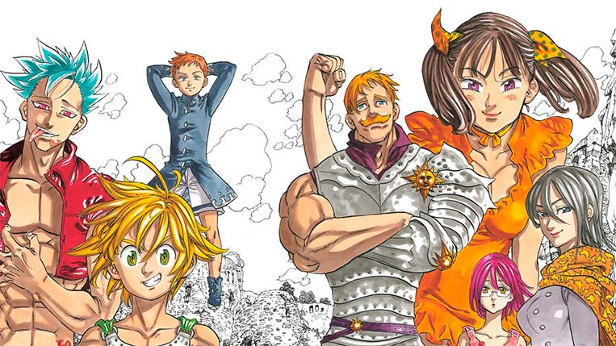
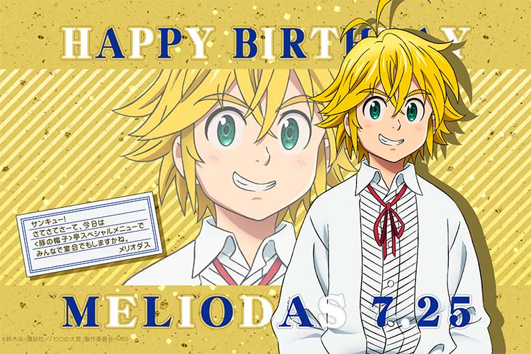
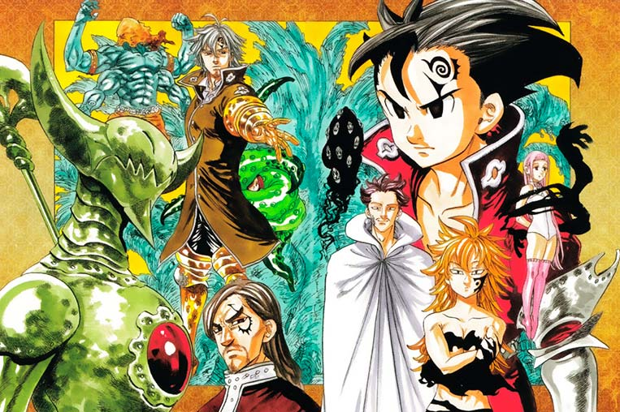
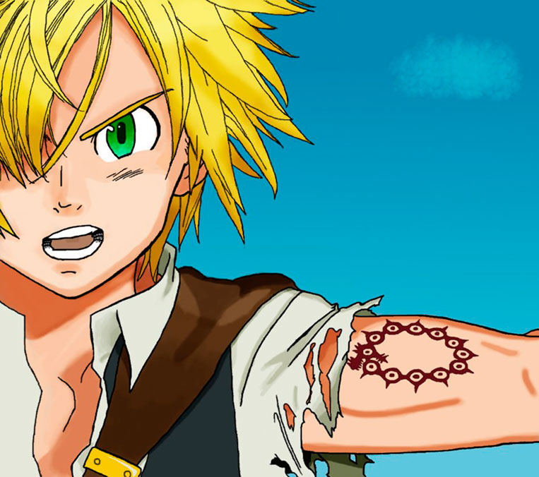
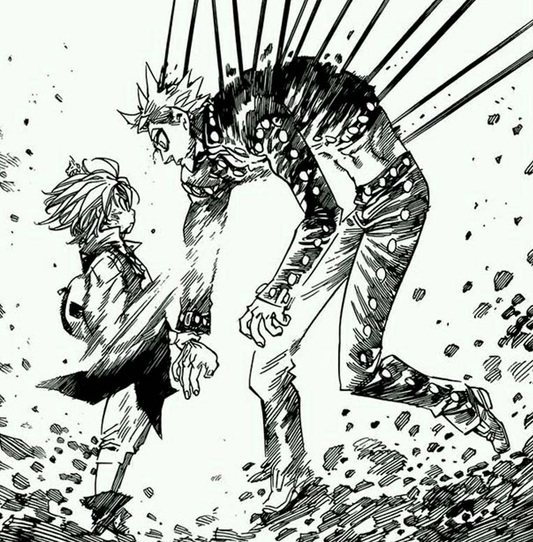

☰ Menu
×
Home
Sobre
Conteúdo
Contato
Pecados

Meliodas, o Capitão dos Sete Pecados Capitais
Meliodas, de Nanatsu no Taizai, é um dos grandes personagens da atualidade, fazendo bastante sucesso entre os fãs de anime e mangá espalhados pelo mundo, que “abraçaram” o herói devido a sua personalidade animada, alegre e, na maioria das vezes, pervertida. Sua vida e história – que é bem longa por sinal – são repletas de fatos interessantes e até mesmo de eventos traumáticos; confira algumas dessas curiosidades abaixo!
Pecado da Ira

Meliodas teve seu pecado da ira do dragão pelo fato dele não proteger a sua amada (Liz), esse título do Pecado da ira foi dado após ele ter destruído Danafor, um dos maiores reinos da Britânia, o motivo por ele ter destruído Danafor foi porque ele se perdeu na sua fúria, após Fraudrin (membro dos dez mandamentos) matar Liz, é os habitantes de Danafor.
Os outros 6 membros dos Sete Pecados Capitais são:
1. Meliodas, o pecado da Ira do Dragão e líder do grupo
2. Diane, o pecado da Serpente da Inveja
3. King, o pecado do Urso da Preguiça
4. Merlin, o pecado do Javali da Gula
5. Gowther, o pecado da Cabra da Luxúria
6. Escanor, o pecado do Orgulho do Leão
Líder dos Sete Pecados Capitais

Já em Nanatsu no Taizai, o personagem não é um rei, mas sim o líder de um grupo de poderosos guerreiros conhecidos como Os Sete Pecados Capitais, sendo chamado por eles de “Capitão”.
Data do seu aniversário e características físicas

O aniversário de Meliodas acontece no dia 25 de julho, uma data que já foi comemorada por ele algumas milhares de vezes. O personagem tem cerca de 1,52m de altura e pesa aproximadamente 50kg.
E já foi líder do Dez Mandamentos

Antes de ser o líder dos Sete Pecados Capitais, há milhares de anos atrás, Meliodas comandou o grupo de guerreiros de elite mais poderoso do Clã dos Demônios, conhecido como Dez Mandamentos, porém os traiu e matou dois de seus antigos companheiros: Aranak e Zeno. Diferente do que é hoje em dia, o personagem em sua época de líder dos Dez Mandamentos é descrito como sádico e aterrorizante, sendo o mais poderoso demônio de toda existência e o principal candidato ao título de próximo Rei Demônio.
Sua tatuagem representa o Ouroboros

Todos os membros dos Sete Pecados Capitais possuem uma tatuagem em seu corpo que tem diferentes representações. A tatuagem de Meliodas é um dragão mordendo a própria cauda (fazendo referência seu pecado); ela representa o Ouroboros; que simboliza a eternidade, algo que faz bastante sentido, já que devido à maldição que recebeu, o personagem é praticamente eterno.
Poderes e habilidades

Meliodas é o mais poderoso dos Sete Pecados Capitais, e com o tempo provavelmente se tornará o personagem com maior poder em Nanatsu no Taizai (quando liberar seu real potencial e tiver controle total sobre suas ações). Detém força, agilidade, velocidade e resistência sobre-humanas; além de outros atributos físicos aprimorados e regeneração.
Sua principal habilidade é o Full Counter; que lhe permite refletir os ataques mágicos que são lançados contra ele, porém com muito mais força do que o que receberia. Existem algumas limitações, mas ainda assim é uma habilidade muito poderosa.
Além disso, ele ainda possui o Encantamento Hellblaze, que lhe permite criar poderosas chamas negras, que podem anular a regeneração até mesmo de seres imortais, como é o caso de Ban, que tem uma cicatriz permanente devido a ter sido ferido pelas chamas.